The goal of this section is to prove the Yoneda lemma. Let us start by introducing the key player:
Definition 12.3.1 (Presheaves). A presheaf on a category \(C\) is a functor \(F\colon C\catop\to\An\). We write \[ \PSh(C) \quad := \quad \Fun(C\catop,\An) \] for the category of presheaves on \(C\).
Definition 12.3.2. A category \(C\) is locally small if the left fibration \[ (s,t)\colon\Tw(C)\to C\catop\times C \] has small fibers. In this case it classifies a functor \(\Hom_C\colon C\catop\times C\to\An\), whose transpose \[ h_C\colon C\to\PSh(C), \qquad y\mapsto\Hom_C(-,y), \] is called the Yoneda functor. A presheaf \(F\) is representable if there is an object \(y\) of \(C\) and an isomorphism \(h_C(y)\iso F\).
The Yoneda lemma will identify morphisms from \(h_C(x)\) to a presheaf \(F\) with objects of \(F(x)\). We first fix \(x\) and prove that this identification is functorial in \(F\). We then use twisted arrow categories to let \(x\) vary as well, and prove that \(h_C\) is fully faithful. This justifies calling it the Yoneda embedding. In the last subsection we assemble these results into an identification of functors on \(C\catop\times\PSh(C)\).
12.3.1 Evaluation at a fixed object
For a fixed object \(x\) of \(C\), evaluation at \(\id_x\) should identify a morphism \(h_C(x)\to F\) with an object of \(F(x)\). We prove this first in the covariant form, for morphisms \(\Hom_C(x,-)\to F\) with \(F\colon C\to\An\). The contravariant statement follows by applying it to \(C\catop\).
Under straightening, a natural transformation \(\Phi \to \Psi\) of functors \(C \to \An\) corresponds to a section of the left fibration classified by \(\Psi\) after pulling back along \(\int\Phi\to C\). The following theorem expresses this correspondence as a pullback square, so that it also describes how these sections vary with \(\Psi\). For \(\Phi=\Hom_C(x,-)\), the category \(\int\Phi=C_{x/}\) has initial object \(\id_x\); evaluation there will give the desired Yoneda identification.
Theorem 12.3.3 (Parametrized evaluation). Consider a category \(C\) equipped with a functor \(\Phi\colon C \to \An\), and let \(q\colon \int \Phi \to C\) denote the associated left fibration:
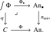 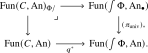
Proof
Both sides of the asserted square are left fibrations over \(\Fun(C,\An)\). We first construct a comparison between them and then prove that it is an equivalence by identifying its fiber over each functor \(\Psi\colon C\to\An\). The final part of the proof checks that the resulting fiberwise equivalence is the canonical one supplied by straightening.
Consider the following pullback square:
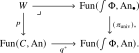 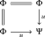 we have by adjunction the equivalence below,
in which \(\int \Phi\) is seen over \(\An\) with structural map \(\Psi\circ q\).
\[
\Map_C\left(\int\Phi, \int \Psi\right) \iso \Map_{\An}\left(\int \Phi, \An_{\bullet}\right)
\]
We also have the following canonical pullback
squares (the first one by definition and the second one by conservativity of left fibrations).
we have by adjunction the equivalence below,
in which \(\int \Phi\) is seen over \(\An\) with structural map \(\Psi\circ q\).
\[
\Map_C\left(\int\Phi, \int \Psi\right) \iso \Map_{\An}\left(\int \Phi, \An_{\bullet}\right)
\]
We also have the following canonical pullback
squares (the first one by definition and the second one by conservativity of left fibrations).
 It remains to check that the map induced by \(f\) on fibers over \(\Psi\) is the composition
\[
{\Fun(C,\An)}(\Phi,\Psi)\iso \Map_C\left(\int\Phi, \int \Psi\right) \iso \Map_{\An}\left(\int \Phi, \An_{\bullet}\right)\, .
\]
A map \(u\colon \Phi\to\Psi\) can be seen as a functor \(u\colon [1]\to\Fun(C,\An)\).
Since \(f(\Phi)=w\), there is a unique functor \(v\colon [1]\to W\)
such that \(p(v)=u\). By definition, we then have \(f(u)=v\).
On the other hand the straightening/unstraightening equivalence consists in interpreting \(u\)
as a functor \(\tilde{u}\colon [1]\times C\to\An\) corresponding to a left fibration
\(q\colon X\to [1]\times C\) and to apply
Construction 8.2.1.
In other words, we see \([1]\times \int\Phi\) over \([1]\times C\) by pulling back \(\int\Phi\)
along the projection \([1]\times C\to C\), which we interpret by transposition as a functor
\[
\bar{u}\colon [1]\to \Fun(\int\Phi,[1]\times C)
\]
and we consider the unique lifting of \(\bar{u}\) of the form
\[
\bar{v}\colon [1]\to\Fun(\int\Phi,X)
\]
with source the composition of the embedding of the fiber \(X_0\hookrightarrow X\)
with the identification of \(\int\Phi\) with the fiber \(X_0\).
In other words, we consider the commutative square
It remains to check that the map induced by \(f\) on fibers over \(\Psi\) is the composition
\[
{\Fun(C,\An)}(\Phi,\Psi)\iso \Map_C\left(\int\Phi, \int \Psi\right) \iso \Map_{\An}\left(\int \Phi, \An_{\bullet}\right)\, .
\]
A map \(u\colon \Phi\to\Psi\) can be seen as a functor \(u\colon [1]\to\Fun(C,\An)\).
Since \(f(\Phi)=w\), there is a unique functor \(v\colon [1]\to W\)
such that \(p(v)=u\). By definition, we then have \(f(u)=v\).
On the other hand the straightening/unstraightening equivalence consists in interpreting \(u\)
as a functor \(\tilde{u}\colon [1]\times C\to\An\) corresponding to a left fibration
\(q\colon X\to [1]\times C\) and to apply
Construction 8.2.1.
In other words, we see \([1]\times \int\Phi\) over \([1]\times C\) by pulling back \(\int\Phi\)
along the projection \([1]\times C\to C\), which we interpret by transposition as a functor
\[
\bar{u}\colon [1]\to \Fun(\int\Phi,[1]\times C)
\]
and we consider the unique lifting of \(\bar{u}\) of the form
\[
\bar{v}\colon [1]\to\Fun(\int\Phi,X)
\]
with source the composition of the embedding of the fiber \(X_0\hookrightarrow X\)
with the identification of \(\int\Phi\) with the fiber \(X_0\).
In other words, we consider the commutative square
A more flexible form follows by restricting the total left fibration along an initial functor.
Corollary 12.3.4. Consider a commutative diagram of the following form:
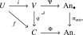 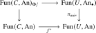
Proof
By Theorem 12.3.3 the diagram is a pullback square if we replace \(U\) by \(V\) and \(i\) by \(\id_V\). But applying part (3) of Proposition 9.1.4 to the universal left fibration \(\pi_{\univ}\colon \An_{\bullet} \to \An\), we obtain a pullback square of the form and thus we may paste the two pullback squares to get the result.
Corollary 12.3.5. Consider a category \(C\) with an object \(x : C^\simeq\)
defined in the absolute context. We assume that, for each object \(y\) of \(C\), \(C(x,y)\)
is small (i.e. that the projection of \(C_{x/}\) to \(C\) is a left fibration with small fibers).
We consider the functor
\[
h_{C\catop}(x)=\Hom_C(x,-)\colon C\to\An
\]
determined by the following pullback square.
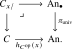 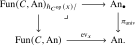
Proof
The map \(U = * \xrightarrow{(x,\id_x)} C_{x/}\) is initial, and hence we may apply Corollary 12.3.4.
We also record three specializations of parametrized evaluation, concerning pointed animae and morphisms out of terminal functors.
Corollary 12.3.6. Let \(e\) be the terminal object of \(\An\). Then there is an equivalence \(\An_{e/} \iso \An_{\bullet}\) over \(\An\).
Proof
We apply Theorem 12.3.3 with \(C = *\) and with \(\Phi = e\colon * \to \An\). Since \(e\) is terminal, it represents the left fibration \(* \to *\). Using the equivalence \(\Fun(*,\An) \iso \An\), we thus obtain a pullback square of the form and thus the top functor is an equivalence.
Corollary 12.3.7. There is an identification \[ \Hom_{\An}(e,-) = \id_{\An} \] of functors \(\An \to \An\).
Proof
The equivalence \(\An_{e/} \iso \An_{\bullet}\) of left fibrations over \(\An\) corresponds under straightening/unstraightening to an identification \(\Hom_{\An}(e,-) = \id_{\An}\).
Corollary 12.3.8. Consider a small category \(C\), and let \(e_C\) denote the terminal object of \(\Fun(C,\An)\) (i.e. the constant functor with value \(e\)). Then there is a pullback square
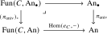
Proof
By definition of the functor \(\Hom(e_C,-)\), there is a pullback square if we replace the left upper corner by the slice category \(\Fun(C,\An)_{e_C/}\). By Lemma 4.3.2 this slice category is equivalent to \(\Fun(C,\An_{e/})\), and so the claim follows from the equivalence \(\An_{e/} \iso \An_{\bullet}\) from Corollary 12.3.6.
12.3.2 Naturality and the Yoneda embedding
The preceding subsection identifies morphisms out of a representable functor with evaluation, functorially in the target functor. To allow the representing object to vary, we return to presheaves on \(C\). The two constructions we want to identify are now functors on \(C\catop\times\PSh(C)\). We compare their associated left fibrations using \(\Tw(C)\); this will also prove that the Yoneda functor is fully faithful.
For a small category \(C\), choose a universe \(\Cat'\) such that \(\Cat\) (and hence \(\An\)) is small with respect to \(\Cat'\). We write \(\An'\) for the full subcategory of \(\Cat'\) spanned by the animae. We then consider the functors
\[
(s,t)\colon \Tw(\PSh(C)) \to \PSh(C)\catop \times \PSh(C)
\]
and
\[
(s,t)\colon \Tw(C) \to C\catop \times C.
\]
Define a category \(V\) and a functor \(v\colon \Tw(C) \to V\) by means of the following commutative diagram:
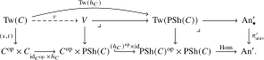 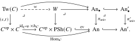
The category \(V\) records morphisms from representable presheaves to arbitrary presheaves, whereas \(W\) records evaluation of a presheaf at an object. The functors \(v\) and \(w\) compare both constructions with the universal morphism parametrized by \(\Tw(C)\). The next lemma says that both comparisons are initial; straightening will therefore identify the functors classified by \(V\) and \(W\).
Lemma 12.3.9. Both functors \(v\) and \(w\) are initial.
Proof
For \(v\), this is a particular case of Lemma 12.2.7. The proof for \(w\) is similar. Recall from Lemma 9.6.8 that for a commutative square
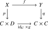 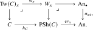 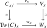
Now, since \(v_x\) is initial (see the proof of Lemma 12.2.7), this implies that \(w_x\) is initial as well. This finishes the proof.
Proposition 12.3.10. The Yoneda embedding \(h_C\colon C\to\PSh(C)\) is fully faithful.
Proof
The proof of the previous lemma shows that the square
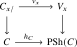
Corollary 12.3.11. For every category \(C\), there exists a preferred equivalence \[ C \iso (C\catop)\catop. \]
Proof
For any object \(x\) of \(C\), the functor \(h_C(x)\) is corepresentable in \(C\catop\), because,
as explained in Remark 12.2.5,
the corresponding left fibration is the functor \((C\catop)_{x/}\iso(C_{/x})\catop \to C\catop\):
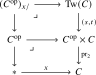 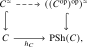
Remark 12.3.12. This corollary means that there exists an equivalence \(\Tw(C\catop) \simeq \Tw(C)\)
making the following diagram commute:
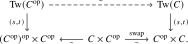
Remark 12.3.13. If \(C\) is locally small, \(\Hom_C\colon C\catop\times C\to\An\) is a functor. In particular any morphism \(f\colon x\to y\) in \(C\), seen as functor from \([1]\) to \(C\), induces for each object \(z\) of \(C\) a morphism \[ f_*\colon \Hom_C(z,x)\to\Hom_C(z,y) \] defined as \(f_*:=\Hom_C(z,f)\). In other words, composition by \(f\) is now encoded in the functorial nature of \(\Hom_C\).
Corollary 12.3.14. Let \(f\colon x\to y\) be a morphism in a locally small category \(C\). Assume that, for any object \(z\) of \(C\), \(f\) induces an isomorphism \[ f_*\colon \Hom_C(z,x)\iso\Hom_C(z,y)\, . \] Then \(f\) is an isomorphism in \(C\).
Proof
Since isomorphisms in \(\PSh(C)\) are detected object-wise, this corollary asserts that the Yoneda embedding is conservative. But any fully faithful functor is conservative, so that this corollary is a direct consequence of Proposition 12.3.10.
Proposition 12.3.15. Consider a pullback square of the form below.
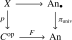
Proof
In view of the preceding remark, this is a special instance of Proposition 12.1.3.
12.3.3 A fully functorial Yoneda lemma
We now identify evaluation and morphisms out of representables as functors on \(C\catop\times\PSh(C)\). The initial functors of the preceding subsection describe both as the same left Kan extension of \(\Hom_C\). Full faithfulness of the Yoneda embedding will moreover show that the resulting identification is determined by its restriction to representable presheaves.
Theorem 12.3.16 (Yoneda lemma). Let \(C\) be a locally small category. There is an isomorphism \[ \Hom_{\Fun(C\catop,\An)}(h_C(x),F) \iso F(x), \] which is functorial in both variables \(F : \Fun(C\catop,\An)\) and \(x : C\catop\).
It is the unique functorial identification which extends the inverse of identification \[ \Hom_C(x,y) \iso \Hom_{\Fun(C\catop,\An)}(h_C(x),h_C(y)) \] on representable functors expressing the full faithfulness of the Yoneda embedding \(h_C\).
Proof
Choose a larger universe \(\Cat'\) in which \(C\) and \(\PSh(C)\) are small,
and write \(\An'\) for its category of animae. We have a Hom-functor
of the form:
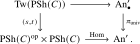 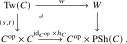
Corollary 12.3.17. Let \(C\) and \(D\) be small categories. Then the Yoneda embedding of \(D\) induces a fully faithful functor \[ \Fun(C,D) \hookrightarrow \Fun(C,\PSh(D)) \simeq \Fun(C \times D\catop, \An) \] whose essential image is the collection of those functors \(F\colon C \times D\catop \to \An\) with the property that \(F(x,-)\colon D\catop \to \An\) is representable for any object \(x\) of \(C\).
Proof
Apply part (2) of Proposition 12.2.11 objectwise in \(C\).
Proposition 12.3.18. Let \(u\colon C\to D\) be a functor between small categories.
We consider the adjunction
\[
u_!\colon\PSh(C)\rightleftarrows\PSh(D)\noloc u^*,
\]
where \(u^*\) is the functor defined by the rule \(F\mapsto F\circ u\catop\)
and \(u_!\) is the left Kan extension functor along \(u\catop\).
Then there is a canonical commutative square of the form below.
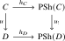
Proof
By Proposition 12.2.3, the functor \(\Tw(u)\) over \(u\catop\times u\) gives, after straightening, a natural transformation \[ \Hom_C\longrightarrow(u\catop\times u)^*\Hom_D. \] Currying gives a natural transformation \(h_C\to u^*h_Du\). Taking its adjunct under the adjunction on \(C\)-indexed functor categories from Proposition 4.4.4 gives a natural transformation \[ \theta\colon u_!h_C\longrightarrow h_Du. \] We will show that \(\theta\) is an isomorphism.
Choose a larger universe in which the two presheaf categories are small. For \(x:C\) and \(F:\PSh(D)\), the Yoneda lemma yields isomorphisms of animae \[ \Hom(h_D(u(x)),F) \simeq F(u(x))=(u^*F)(x) \simeq\Hom(h_C(x),u^*F)\, . \] By adjunction, Proposition 12.1.19 tells us that we also have a canonical equivalence of the form \[ \Hom(h_C(x),u^*F) \simeq \Hom(u_!(h_C(x)),F) \] and thus an identification of the form \[ \Hom(h_D(u(x)),F) \simeq \Hom(u_!(h_C(x)),F) \, . \] This equivalence is precomposition with \(\theta_x\). Indeed, under the adjunction, precomposition sends a natural transformation \(\gamma\colon h_D(u(x))\to F\) to the composite \[ h_C(x)\longrightarrow u^*h_D(u(x))\xrightarrow{u^*\gamma}u^*F. \] The first map sends \(\id_x\) to \(\id_{u(x)}\), by the construction of \(\Tw(u)\). So evaluating this composite at \(\id_x\) gives \(\gamma_{u(x)}(\id_{u(x)})\), which is also the image of \(\gamma\) under the first Yoneda isomorphism above. By applying this construction to the universal object \(\gamma\) in its mapping anima, this identifies the two maps of animae. It follows that precomposition with \(\theta_x\) is an isomorphism for every \(F\), and hence \(\theta_x\) is an isomorphism itself. Isomorphisms in a functor category are detected objectwise, so \(\theta\) is the required natural isomorphism.
Corollary 12.3.19. For any functor \(f\colon C\to D\), there is a commutative square
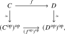
Proof
This follows from Proposition 12.3.18 and Proposition 12.1.9.
12.3.4 Consequences of Yoneda
We record various useful consequences of the Yoneda lemma: pointwise criteria for representability of presheaves and adjunctions between functors, and poset trunctions.
Theorem 12.3.20. Let \(f\colon C \to D\) be a functor between small categories. We consider the adjunction \[ f_!\colon \PSh(C) \rightleftarrows \PSh(D) \noloc f^*, \] where \(f^*\) is defined by the rule \(G\mapsto G\circ f\catop\). Then the following assertions are equivalent:
(1) The functor \(f\) admits a right adjoint.
(2) There is a functor \(g\colon D \to C\) together with a functorial identification \[ \Hom_D(f(x),y) \iso \Hom_C(x,g(y)) \] natural in \((x,y) : C\catop \times D\).
(3) For any object \(y\) in \(D\), the functor \(f^*h_D(y) = \Hom_D(f(-),y)\colon C\catop \to \An\) is representable.
(4) There is a functor \(g\colon D \to C\) together with a natural identification \[ g_! \iso f^* \] of functors from \(\PSh(D)\) to \(\PSh(C)\).
Proof
Condition (2) implies (3) by evaluation at each object of \(D\), while \((3) \implies (2)\) is Corollary 12.3.17. We will show that the following chain of implications holds. \[ (1)\implies (4)\implies (3)\quad\text{and}\quad (2)\implies (1) \] To show that (1) implies (4), we observe first that, for any functor \(g\colon D \to C\), we have an adjunction of the form \[ g_!\colon \PSh(D) \rightleftarrows \PSh(C) \noloc g^*. \] If \(g\) is right adjoint to \(f\), then \(g^*\) is right adjoint to \(f^*\), and hence \(g_! \iso f^*\) since both are left adjoints to \(g^*\).
Finally, assume (4), and let \(y:D\). By Proposition 12.3.18, we have \(g_!(h_D(y))\simeq h_C(g(y))\). Together with (4), this gives \[ f^*h_D(y)\simeq g_!(h_D(y))\simeq h_C(g(y)), \] so \(f^*h_D(y)\) is representable, proving (3).
Let us assume finally that assertion (2) holds. Given any object \(y\) of \(D\), there is a unique map \[ \varepsilon\colon f(g(y))\to y \] corresponding to the identity of \(g(y)\). We then have a map for each object \(x\) of \(C\) of the form \[ \Hom_C(x,g(y))\xrightarrow{\text{apply $f$}} \Hom_D(f(x),f(g(y))) \xrightarrow{\text{compose with $\varepsilon$}} \Hom_D(f(x),y) \] that is an equivalence by assumption. It follows from Proposition 12.1.19 that \(f\) has a right adjoint.
Lemma 12.3.21. Let \(C\) be a locally small category, let \(F\colon C\catop\to\An\) be a presheaf, and let \(y\) be an object of \(C\). Suppose that the following conditions hold.
(i) For each object \(x\) of \(C\), there is a morphism \[ s_x\colon \Hom_C(x,y)\to F(x)\, . \]
(ii) For each morphism \(u\colon x'\to x\) in \(C\), the square
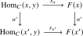
commutes in \(\An\).
Then there is a unique morphism of presheaves \[ s\colon\Hom_C(-,y)\to F \] equipped with an identification \(\alpha\colon s(y)(\id_y)\simeq s_y(\id_y)\). The component of \(s\) at \(x:C^{\simeq}\) is \(s_x\). In particular, if each \(s_x\) is an isomorphism, then \(F\) is representable.
Proof
By the Yoneda lemma, evaluation at \(\id_y\) defines an isomorphism of animae \[ \Hom_{\PSh(C)}(\Hom_C(-,y),F)\iso F(y). \] Its fiber over \(s_y(\id_y)\) is therefore contractible. This fiber is precisely the anima of pairs \((s,\alpha)\), proving the uniqueness assertion.
Given an arbitrary morphism \(u\colon x\to y\), we may compute \[ s(x)(u)\simeq F(u)(s(y)(\id_y)) \simeq F(u)(s_y(\id_y))\simeq s_x(u), \] where we used the naturality of \(s\), the identification \(\alpha\), and condition (ii) evaluated at \(\id_y\). Taking \(u\) to be the universal term of the anima \(\Hom_C(x,y)\) gives an isomorphism of maps \(s(x)\simeq s_x\).
If every \(s_x\) is an isomorphism, then \(s\) is an isomorphism by the pointwise criterion for natural isomorphisms, and it follows that \(F\) is represented by \(y\).
We may now show that the poset truncations from Chapter 11 exist. We construct them by applying propositional truncation to representable presheaves.
Construction 12.3.22. Let \(C\) be a category and choose a universe \(\Cat\)
where \(C\) is small.
Consider the composite
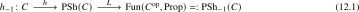
Denote by \(\posetrunc{C}\subseteq \PSh_{-1}(C)\) the essential image of \(h_{-1}\), which is tautologically equipped with a map \(C\to\posetrunc{C}\).
Proposition 12.3.23. The category \(\posetrunc{C}\) is a poset and the functor \(C\to\posetrunc{C}\) is a cover both on objects and on mapping animae.
Proof
The category \(\Prop\) is a poset by Lemma 10.1.9, hence also \(\PSh_{-1}C=\Fun(C^\op,\Prop)\) by Corollary 10.3.8 and its full subcategory \(\posetrunc{C}\). Moreover, the functor \(C\to \posetrunc{C}\) is an objectwise cover by construction. It remains to show that for objects \(c,d : C^\simeq\), the map \begin{equation} C(c,d)\to\posetrunc{C}([c],[d])=\PSh_{-1}(C)(h_{-1}c, h_{-1}d) \tag{12.2}\end{equation} is a cover. By Yoneda and unraveling the construction, this map is identified with the propositional truncation map \begin{equation} C(c,d)\to \truncation{-1}{C(c,d)}, \tag{12.3}\end{equation} which is a cover by Lemma 11.4.8.
Corollary 12.3.24. The assignment \(C\mapsto \posetrunc{C}\) assembles to left adjoints to the inclusions \begin{equation} \Poset\hookrightarrow\Cat \quad\text{and}\quad \Set\hookrightarrow\An. \tag{12.4}\end{equation}
Proof
The first statement follows directly from Corollary 11.4.15 and Proposition 12.3.23 by the usual pointwise construction of adjoints. For the second statement, let \(C\) be an anima. Every morphism of \(\posetrunc C\) merely lifts along the cover on mapping animae to a morphism of \(C\), and is therefore invertible. Invertibility is a proposition, so the mere lift suffices. Thus \(\posetrunc C\) is an anima, and, being a poset, it is a set.